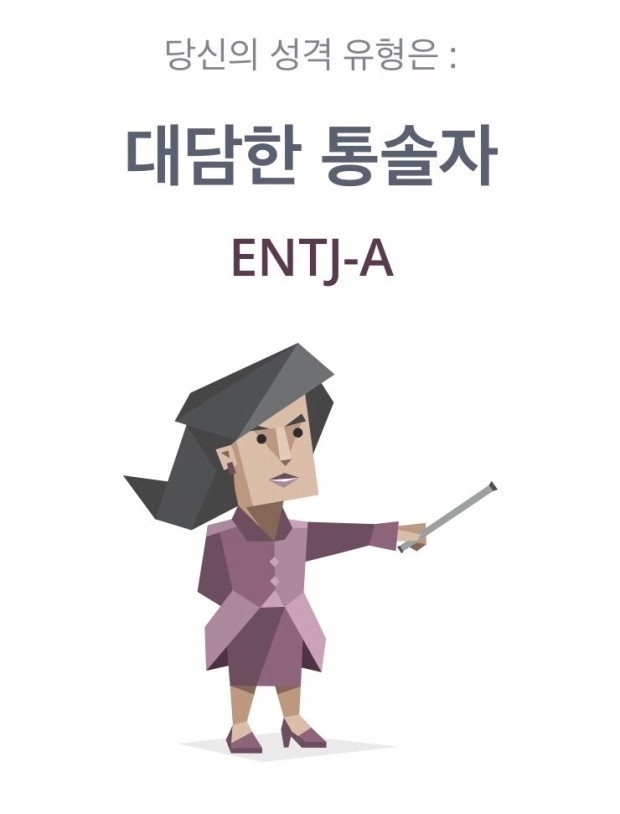

★ 현서의 MBTI ★
ENTJ-A※ENTJ-A 특징 중 저와 맞는 특징들만 골라서 서술하였습니다!
- '성취'를 통해 느끼는 행복
- 크든 작든 성취 가능한 도전을 좋아합니다.
(단, 관심이 없는 분야나 책임지지 못할 것은 도전하려 하지조차 않습니다.) - 도전을 하는 과정에서 받는 스트레스는 제게 좋은 자극제가 됩니다.
- 예) '아 너무 스트레스 받네... 이거 안되겠다 그만 둬야지'(X)
'와 이렇게 빡세다고? 내가 기필코 해내고 만다!'(O) - 달성하기 힘들 수록 달성했을 때 받는 성취감이 더 크기 때문에 오히려 좋습니다.
- '존중'하지만 '동의'는 아냐
- 타인이 나와 다른 생각을 갖고 있을 땐 무조건 '그럴 수도 있지'라고 생각합니다.
- 그들이 주장하는 것이 충분히 논리적이지 않다면 제 생각은 그대로 고수합니다.
- 저도 저의 생각을 말 하되 그들이 생각을 바꾸지 않더라도 설득하지 않습니다.
- 말 그대로 타인의 의견을 '존중'하되 그것이 '동의'한다는 뜻은 아닙니다.
- '합리적', '효율적'(♥)인 것을 추구
- 저는 어떤 것이든 실행에 옮기기 전에 머릿 속으로 시뮬레이션을 돌려봅니다.
- 시간 낭비하는 것을 싫어해 '한 번 할 때 제대로 하자' 하기 때문입니다.
- 드물지만 일을 하다 더 효율적인 방법을 찾아내면 시간을 들여서라도 바꿉니다.
- 비효율적으로 일하는 사람들을 보면 답답하지만 제게 피해가 없다면 참습니다.
훈수나 조언은 내가 아끼는 사람에게만. 친하지 않은데 훈수 둔다?
제게 피해가 있거나 혹은 사회적으로 부도덕한 일을 저지르고 있을 때입니다.